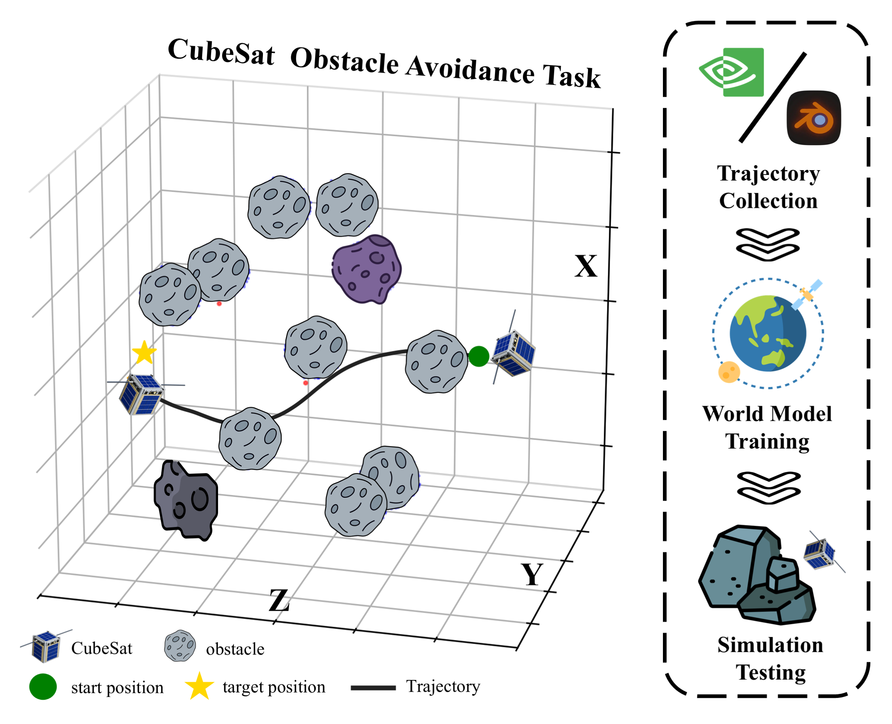
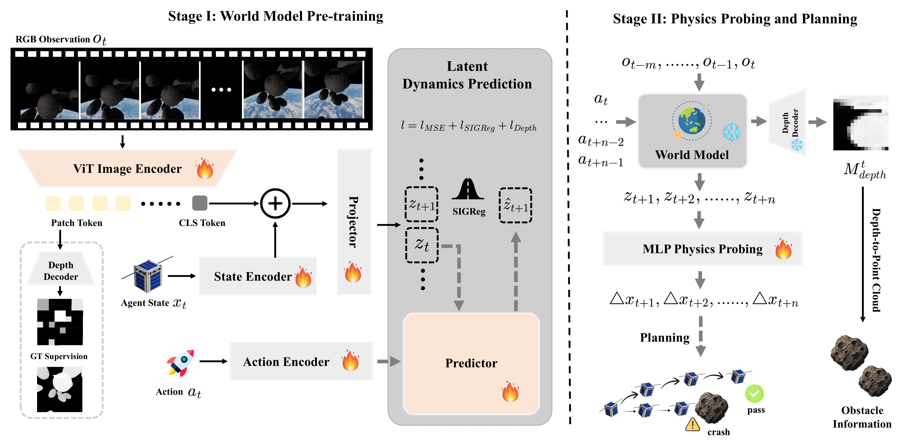
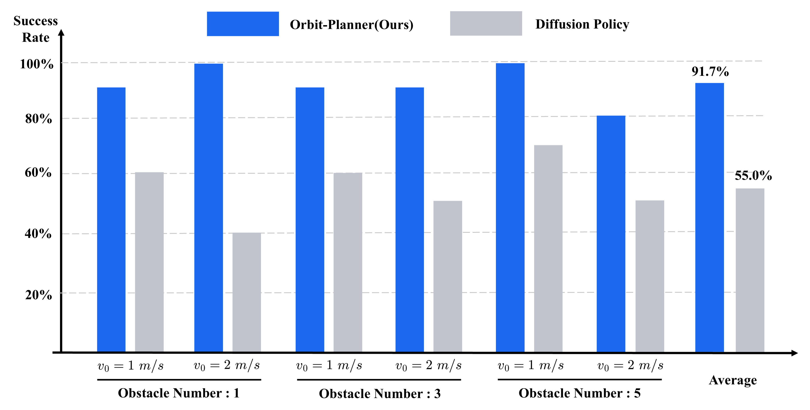

Code
Code
 Dataset
Dataset
 01
01
Expert
Goal-directedRRT* planning with PD tracking, wider safety margins, and low control noise.
Latent world models · On-orbit autonomy
1University of Chinese Academy of Sciences 2Key Laboratory of Target Cognition and Application Technology (TCAT), Aerospace Information Research Institute, Chinese Academy of Sciences
A CubeSat agent that imagines action-conditioned futures in latent space, recovers physical state changes, and plans collision-free maneuvers online.

01 / Demo
Orbit-Planner continuously predicts future latent states, decodes physical states, and replans before executing the next control action.

02 / Dataset
8,000 trajectories are collected with randomized obstacles and lighting: 7,200 for training and 800 for testing. Three behavioral modes expose the model to safe, unsafe, and exploratory motion.
01
RRT* planning with PD tracking, wider safety margins, and low control noise.
 02
02
Direct goal-seeking trajectories without obstacle-aware planning.
 03
03
Strong random action noise for broad, unstructured state-space exploration.
03 / Framework
Stage I learns a multimodal predictive representation from RGB, spacecraft state, and control actions. Stage II freezes the world model, probes imagined physical changes, and plans with recovered obstacle geometry.

04 / Results
Across six unseen settings with one, three, or five obstacles and two initial velocities, Orbit-Planner consistently outperforms the reactive imitation-learning baseline.

@article{li2026orbitplanner,
title = {Orbit-Planner: Towards Latent World Models for On-Orbit Obstacle Avoidance of Satellite Agents},
author = {Li, Zhijian and Ren, Chao and Wang, Peijin and Sun, Xian},
journal = {arXiv preprint arXiv:2608.16651},
year = {2026}
}